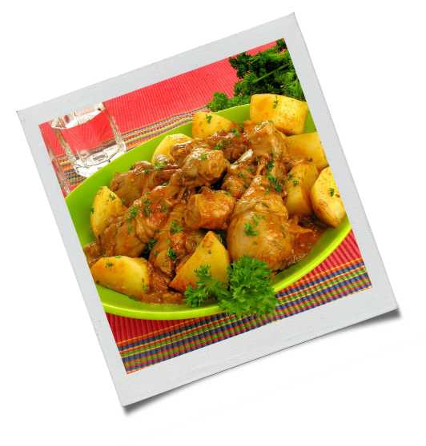

1 kg e 1/2 de frango
 cortado em pedaços
cortado em pedaços2 batatas grandes picadas em cubos médios
Mollho de Tomate
Maionese
Tempero para aves
Alho e sal

Tempere os pedaços de frango com alho, sal, e tempero para aves;
Acrescente 5 colheres de sopa de molho de tomate no frango, ou se preferir 2 colheres de extrato de tomate e três colheres de maionese;
Misture as batatas, deixe em média 30 minutos para marinar;
Coloque em uma assadeira e leve ao forno em temperatura máxima por aproximadamente 1 hora ou até que esteja dourado;
Sirva com arroz branco.